Apache服务器安全设置
服务器运行权限
Linux-Apache
Linux系统默认给Apache的是一个www-data账户
执行命令Lsof -i:80或ps aux|grep apache|grep -v grep
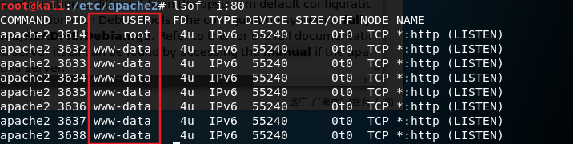
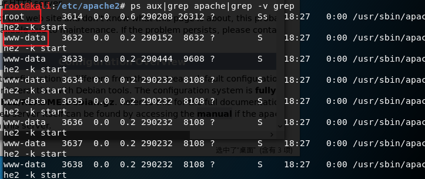
Apache主进程是以root权限运行。Apache的Web端口是80或443，而在Linux中开启小于xiao1024的端口需要root权限，所以Apache主进程必须是以root权限运行。Apache子进程执行用户是www-data。www-data是Linux中运行Web服务的默认用户，权限较低
高级用户可以尝试更改为地权限用户，Apache的运行用户的配置信息在/etc/apache2/apache2.conf，在此文件中，提示用户和用户组设置在/etc/apache2/envvars文件
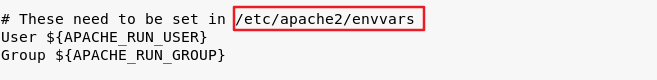
打开/etc/apache2/envvars文件,可以修改用户和用户组
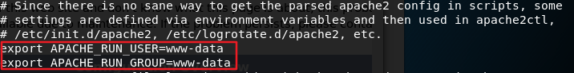
Windows-Apache
在Windows上安装完成Apache后默认就是administrator权限，如果使用此权限运行Web服务，如果攻击者拿下webshell就很容易控制整个服务器，可以随意添加账户：
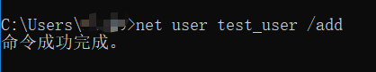
因此，需要给Apache降权，或者说是设置一个安全执行账户：新建一个普通账户，然后将这个账户的用户组改为Guests，注意要将Apache目录下的日志的可写权限赋给Guests账户；然后打开Apache服务属性中的登录选项卡，点选此账户，写入刚才添加的用户名和密码；最后重启服务，这是windows下的Apache权限就设置完毕了。攻击者由于权限问题无法执行高位的系统命令。
目录及文件权限
Linux在默认情况下，如果对当前目录不存在默认文件比如index.php，Apache会列出当前目录
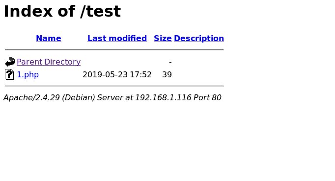
其权限设置在Apache配置文件httpd.conf中1
2
3
4
5<Directory /var/www/>
Options Indexes FollowSymLinks
AllowOverride None
Require all granted
</Directory>
Options: 两个参数决定了/var/www可以进行的操作Indexes: 可以在该目录中使用符号连接FollowSymLinks：允许目录浏览，当客户仅指定要访问的目录，但没有指定要访问目录下的哪个文件，而且目录下不存在默认文档时，Apache以超文本形式返回目录中的文件和子目录列表（虚拟目录不会出现在目录列表中）。
Indexes决定目录可以被列出，从漏洞角度上讲也就是目录遍历漏洞，操作这个参数即可进行权限控制。修改配置文件如下
1 | <Directory /var/www/> |
再次访问时报错，出现“Forbidden”字样
另外，linux的chmod命令也可进行权限控制，如chomod o-r 1.txt命令将www-data的读权限去掉
Windows中同样可以使用这两种方法控制权限，修改httpd.conf同linux中的操作。
Windows另一种修改权限的方法是：右键点击选中文件夹（或文件）->属性->安全
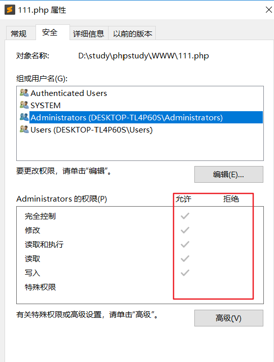
一些文件上传目录一定要设置为不可执行，防止webshell的上传。
错误重定向
错误重定向是指通过在Web程序出错令其跳转到指定的显示页面。
可以通过设置.htaccess文件达到目的，但是windows中正常情况下无法直接创建.xxx的文件，可以使用DOS命令
然后使用其它编辑器修改.htaccess内容
可以通过配置httpd.conf文件达到跳转目的
1
2
3
4
5
6
7
8
9
10DocumentRoot "D:\WWW"
<Directory />
Options +Indexes +FollowSymLinks +ExecCGI
AllowOverride All
Order allow,deny
Allow from all
Require all granted
RewriteEngibe On
RewriteRule "tttt\.html$" "404.html"
</Directory>RewriteEngibe On: 开启跳转RewriteRule "tttt\.html$" "404.html": 第一个参数是一个正则，第二个参数使要跳转到的相对地址；也就是说当符合正则时进行跳转。
Apache日志格式
Linux中Apache日志文件在/var/log/apache2目录下
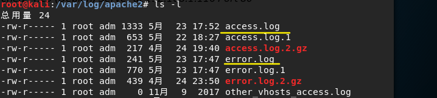
其中的压缩文件为Apache自动压缩以节省空间，other_vhosts_access.log是虚拟主机日志
access.log
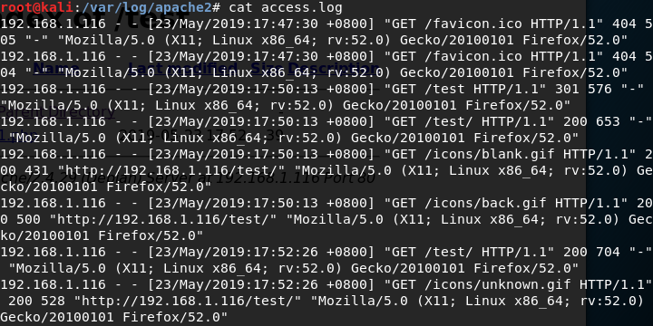
日志格式：
192.168.1.116 - - [23/May/2019:17:52:26 +0800] “GET /icons/unknown.gif HTTP/1.1” 200 528 “http://192.168.1.116/test/" “Mozilla/5.0 (X11; Linux x86_64; rv:52.0) Gecko/20100101 Firefox/52.0”- 远端主机名：192.168.1.116
- 远端登录名：-
- 远程用户名：-
- 访问时间：[23/May/2019:17:52:26 +0800]
- HTTP请求：GET /icons/unknown.gif HTTP/1.1
- HTTP状态码：200
- 发送的字节数：528
- Referer：http://192.168.1.116/test/
- User-Agent：”Mozilla/5.0 (X11; Linux x86_64; rv:52.0) Gecko/20100101 Firefox/52.0”
error.log (一般格式为: [日期和时间] [错误等级] 错误消息)
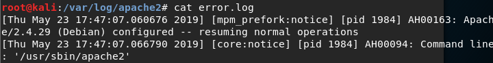
httpd.conf中定义了error.log的路径和日志级别,级别是指日志记录的最低级别
日志级别分类：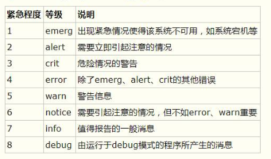
获取到时间戳：1558511374467